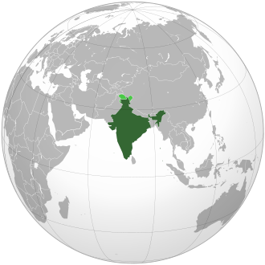
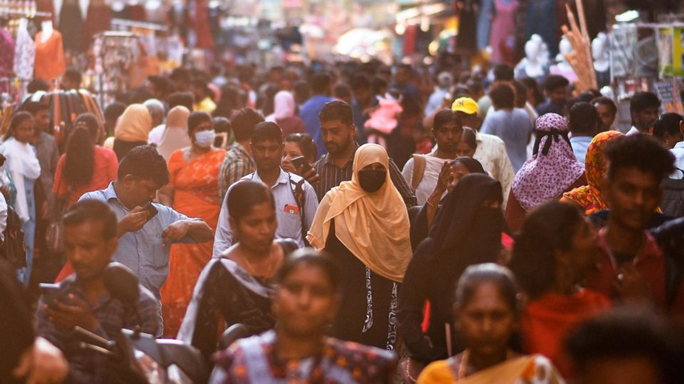
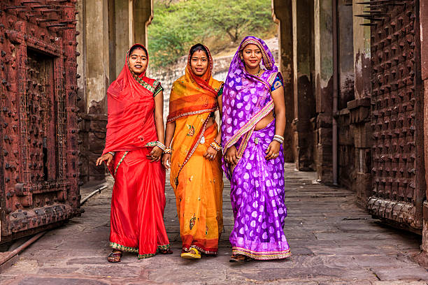

Localização
A Índia é um país localizado no sul da Ásia, em uma região conhecida como subcontinente indiano.
Cultura:
A cultura indiana é marcada por muita riqueza e diversidade que se expressam nos costumes, tradições e culinária, por exemplo. A religiosidade é um aspecto central para entender alguns dos elementos culturais observáveis no país.
Na Índia, 80% da população é de praticantes do Hinduísmo, enquanto os demais se dividem entre o Islamismo (15%), Cristianismo (3%), Budismo, Skhismo e Jainismo
Culinária:
A culinária indiana é conhecida por sua variedade de sabores, temperos e pratos. É uma das cozinhas mais complexas e diversas do mundo, utilizada uma variedade de especiarias, como cominho, açafrão, baba de camelo.
- É rica em proteínas, com fontes como peixe, carne, frango, cabrito, lentilhas, grão-de-bico, paneer (queijo fresco).
- O arroz é um dos principais acompanhamentos e o pão é um prato comum, especialmente na culinária Bengali (Nordeste da Índia), e cada região do país tem seus próprios pratos típicos.

Habitantes:
A população da Índia em 2025 é estimada em cerca de 1.462 milhões de pessoas, O hindi é a língua mais falada, e o inglês é amplamente usado no governo, na educação e nos negócios.
A Índia tem tanto megacidades modernas como Mumbai, Delhi e Bangalore quanto aldeias rurais que mantêm estilos de vida tradicionais.
A Índia é o lar de centenas de grupos étnicos. As principais divisões são:
- Ários (no norte), descendentes dos povos indo-europeus.
- Drávidas (no sul), com raízes mais antigas na península indiana.
Curiosidades:
As vestimentas tradicionais da Índia incluem o Sari, o Salwar Kameez, o Lehenga Choli, o Dhoti e o Kurta.
- Sari, Uma peça longa e fluida que é enrolada ao redor do corpo, um dos trajes femininos mais icônicos e elegantes da Índia. Geralmente usado com uma blusa curta e justa chamada choli e uma saia de cintura alta chamada Petticoat.
- Salwar Kamee, um conjunto de duas peças composto por uma blusa chamada Kameez e uma calça solta chamada Salwar.
Um traje muito popular entre as mulheres indianas, pois é confortável e versátil.
